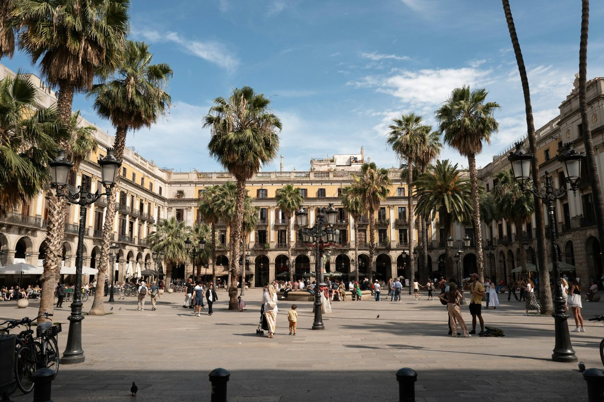

Four routes across Spain's most fascinating cities. Start when you want, stop when you like, go as deep as you want into the history and culture. No app, no group, no booking.
No app neededFrom €4.99First 3 stops freeAny day, any time
Stepcast is a self-guided audio walking tour you access directly on your phone browser. Nothing to download, no account to create and no time slot to book. Purchase once, open the tour on your phone and start walking whenever you're ready.
Each stop has a narrated audio guide and full written text, covering the history, architecture and culture of the city. Pause to go inside a landmark, spend as long as you like, then carry on exactly where you left off.
Four Spain Routes
Pick your city.
Each tour is independently researched, personally visited and built to give you real context beyond what's on the information board.
Andalusia
Seville
11 Stops4.5 km~3 hrs
One of Europe's most beautiful cities, and one of its most layered. From the grandeur of the Cathedral to the intimacy of Barrio Santa Cruz, the Alcazar and the Torre del Oro.
A city that rewards curiosity. The Mercado Central, the Cathedral, La Lonja de la Seda and the Valencian Sistine Chapel, through one of Spain's most underrated old towns.
From the buzz of Las Ramblas into the layers of the Gothic Quarter, past Roman walls, the Cathedral and Santa Maria del Mar, one of the finest medieval churches in Europe.
The architecture trail that makes Barcelona unlike anywhere else. Casa Batllo, La Pedrera, the Sagrada Familia and the full story of the Modernisme movement that shaped the city.
No app to download. Works on any iPhone or Android, any browser.
2
Try the first 3 stops free
Start walking before you commit. The first 3 stops are always free.
3
Unlock for €4.99
One payment, lifetime access. Revisit the tour as many times as you like.

Common Questions
Everything you need to know.
Stepcast offers self-guided audio walking tours across Spain in Seville, Valencia and Barcelona (two routes). All are personally researched, covering history, architecture and culture in depth. First 3 stops free on every tour.
Yes. The Stepcast Seville tour covers 11 stops including the Cathedral, La Giralda, the Real Alcazar, Barrio Santa Cruz, the Torre del Oro and Plaza de España. It works on your phone browser with no app needed. First 3 stops free.
Yes. Stepcast has two Barcelona tours: Old Barcelona covering Las Ramblas, the Gothic Quarter, the Cathedral and Santa Maria del Mar; and a Gaudi and Modernisme trail covering Casa Batllo, La Pedrera, the Sagrada Familia and more. Both are self-guided audio tours with no app needed.
Yes. The Valencia tour covers 9 stops through the old town including the Mercado Central, the Cathedral, La Lonja de la Seda and the Valencian Sistine Chapel. Works on your phone browser with no app needed.
Not with Stepcast. There is no booking, no time slot and no group. Purchase the tour and start whenever you are ready. Any day, any time, no expiry on access.
Each Stepcast tour costs €4.99 to unlock the full route. The first 3 stops are always free so you can try before you buy. One payment gives you lifetime access with no subscription.
Yes. Your unlock is saved to your browser. Close the page, go for lunch, come back the next morning. The tour picks up exactly where you left it.
Ready to explore Spain?
First 3 stops are always free. No booking, no app, no group.